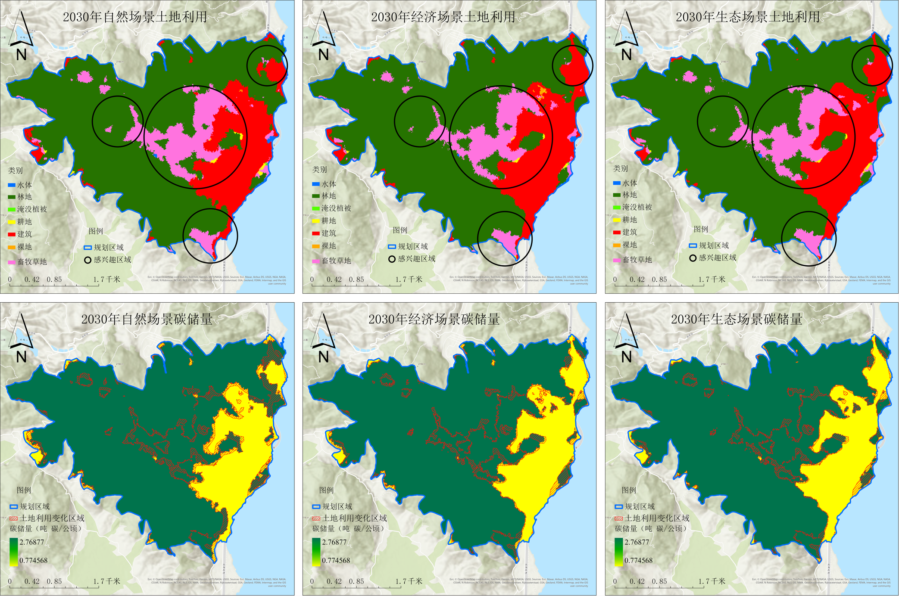
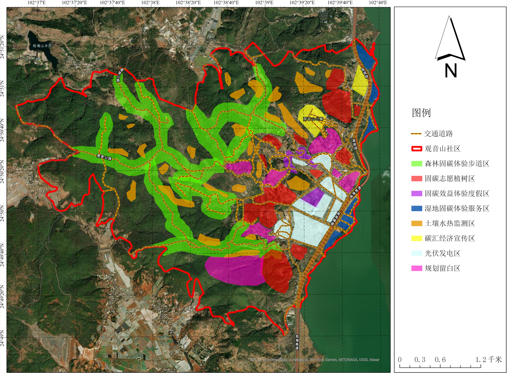
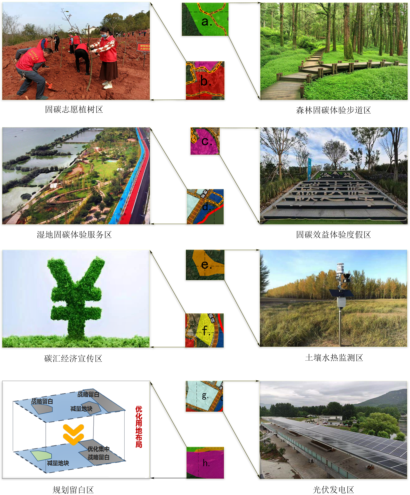
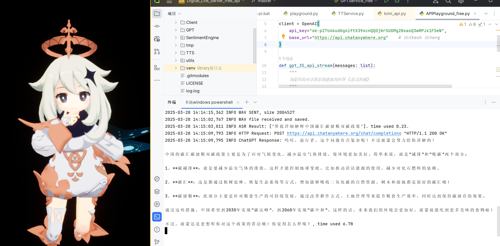

实地调研阶段
通过问卷调查、SWOT分析和网络舆情调查获取基础数据
云南省观音山社区碳汇经济价值提升规划设计
周泽同*，沈思仪，王洁，李珊，袁磊*
云南省昆明市西山区观音山社区地处滇池西岸，是以白族为主的民族聚居村落。社区以"山、水、林"为核心生态基底，森林覆盖率高达71.91%，拥有19853亩林地，据遥感估算其碳储量潜力约6万吨，年固碳量超2000吨。

图1 研究区概况
当前全球气候治理已进入关键阶段，《巴黎协定》1.5℃控温目标持续强化，碳汇正从生态概念转化为可量化交易资产。我国明确提出"2030年前碳达峰、2060年前碳中和"的"双碳"发展目标。在此背景下，本项目以观音山社区为规划区，系统构建"科学评估-产品开发-价值转化"的碳汇经济价值提升方案。
观音山社区兼具森林、湿地双重碳汇优势，叠加滇池生态屏障区位，具备发展碳汇经济的天然优势。
发展模式同质化竞争、居民利益共享机制不完善、项目发展风险等问题亟待解决。
破解生态-发展矛盾、重塑社区产业结构、塑造碳汇经济发展典型示范。
本项目采用多学科交叉的研究方法，构建了"数据采集-模型分析-规划设计"的完整技术路线。

图2 总体技术路线
采用InVEST模型，基于10m分辨率土地利用数据和校正后的碳值表进行计算。碳密度校正考虑了年平均降水量和年均温的影响。
运用Geodetector模型，量化NDVI(q=0.768)、DEM(q=0.666)、人口密度(q=0.641)等自然和人为因子对碳储量空间分异的解释力。
构建了自然发展、经济发展和生态发展三种情景的土地利用转移矩阵，通过FLUS模型的ANN-CA模块进行预测，模拟精度达90%以上。
通过问卷调查、SWOT分析和网络舆情调查获取基础数据
运用InVEST模型反演碳储量时空演变特征，结合FLUS-ANN-CA模型模拟未来情景
基于分析结果进行功能分区和碳汇产品开发设计
开发碳汇官网、WebGIS系统等成果，推动项目落地实施
研究发现2017-2023年间观音山社区土地利用格局发生显著变化，林地占比呈现波动上升趋势，畜牧草地从11.7%增至18.5%，而耕地从24.8%锐减至8.1%。碳储量分析显示，森林变化与碳储量变化呈现高度线性相关（R²=0.98），证实森林生态系统在区域碳汇中的核心作用。

图3 2017~2023年社区土地利用格局演变
多情景模拟表明，生态发展情景碳储量密度最佳，为0.150吨/平方米，在平衡发展与保护方面最具优势。
观音山社区碳储量空间分异的驱动机制呈现出显著的“自然-人文”耦合特征，其核心驱动力可归因于植被生态系统的结构性参数与人类活动的协同作用。

图4 地理探测器驱动机制图
模拟结果表明，不同发展情景对观音山社区的土地利用和碳储量空间格局产生了显著影响。在自然发展情景下，东北部的人类活动扩张受到限制，该区域的碳储量密度（0.149吨/平方米）相对较高；而在经济发展（0.148吨/平方米）和生态发展（0.150吨/平方米）情景下，中部的人类活动扩张受到约束，使得该区域的碳储量密度较自然发展情景有所提升。这一格局差异表明，区域碳储量的空间分布特征与人类活动管控强度密切相关，其中生态发展情景在平衡发展与保护方面展现出相对优势。社区需着重保护森林固碳能源，科学限制社区城镇化扩张对森林资源的影响。

图5 2030年碳储量空间模拟
建立区块链赋能的透明交易平台，实现社区森林碳汇市场化流转
开发抵押贷款、保险及银行产品，盘活碳资产并降低开发风险
设立"观音山生态共富补偿基金"，推行"以碳代偿"机制
构建个人储碳账户和企业碳汇托管服务
基于ArcGIS Pro空间分析和碳储量模拟结果，将社区科学划分为8个功能分区和10%-15%的规划留白区：

图6 社区规划功能分区
八个功能分区的景观设计概念图如下：

图7 功能分区景观设计
铺设光伏步道和科普展示牌，增强人民对碳能源的认同感
采用NFC芯片实现"一树一码"追踪，构建"种植-计量-兑换"闭环机制
融合夯土光伏建筑和碳足迹互动地砖，打造全链条低碳场景
设置智能监测浮标和碳汇数据展示屏，构建低干预型湿地碳汇科教系统
构建"科技+体验"双轨宣传体系：
图8 "碳小C"虚拟形象设计

图9 "碳晓智"AI数字人开发初期测试
开发社区碳汇宣传与交易平台官网，集成WebGIS空间可视化系统
创新设计"碳晓智"AI数字人，提供智能问答服务
打造"碳小C"虚拟形象作为社区碳汇代言人
开发森林固碳步道、志愿植树活动等实体项目
保守估算年收益560-870万元，其中碳汇交易平台25-40万元，碳汇银行30-50万元，固碳效益体验度假区200-300万元
预计年增固碳量2000吨以上，有效提升生态系统服务功能
问卷调查显示81.9%受访者支持碳汇经济发展，75.2%愿意参与相关活动
采用InVEST、FLUS等成熟模型，精度验证可靠
参考云南省红河州案例(1.15万吨交易额118.5万元)，保守估算投资回报周期合理
符合国家《碳达峰碳中和标准计量体系建设行动方案》和云南省《深化集体林权制度改革实施方案》要求
规划团队由云南师范大学地理学部的精英师生团队联合组成，具备扎实的学术背景与丰富的实践经验。
团队负责人
邮箱：zhouzetong_rs@163.com
遥感数据处理与碳汇计量、大数据分析与可视化、网站设计与开发
地理信息系统（GIS）与空间分析建模、物联网与智慧系统集成
经济效益分析与数据收集
数字孪生与三维建模
技术指导
邮箱：827500747@qq.com
国土空间规划设计及核心技术指导
提供科研支持和技术指导
开发社区碳汇智能监管平台
开发"碳晓智"AI数字人